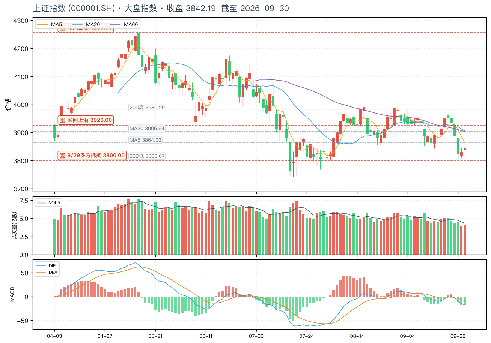
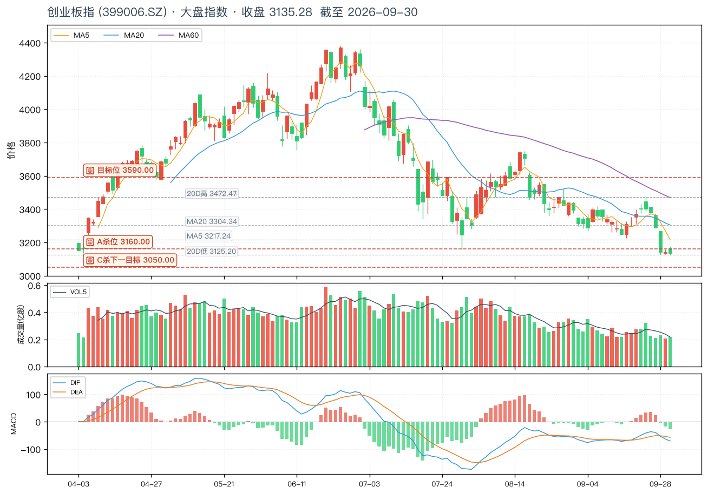
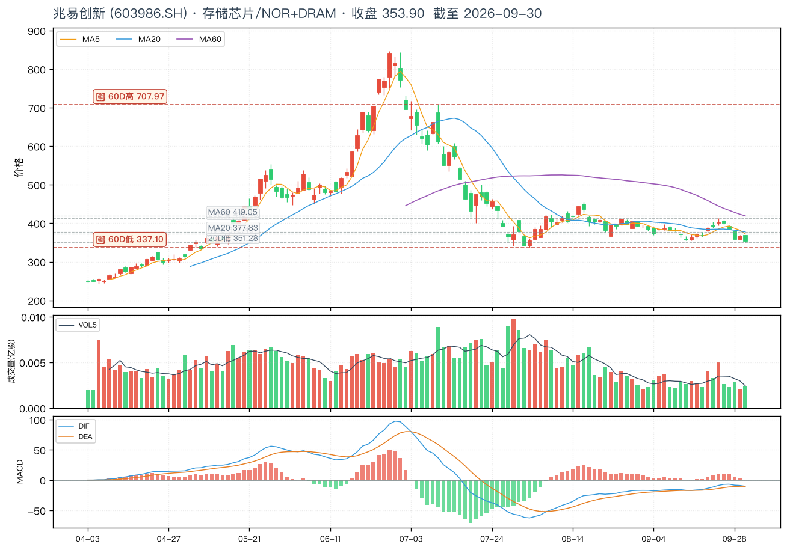
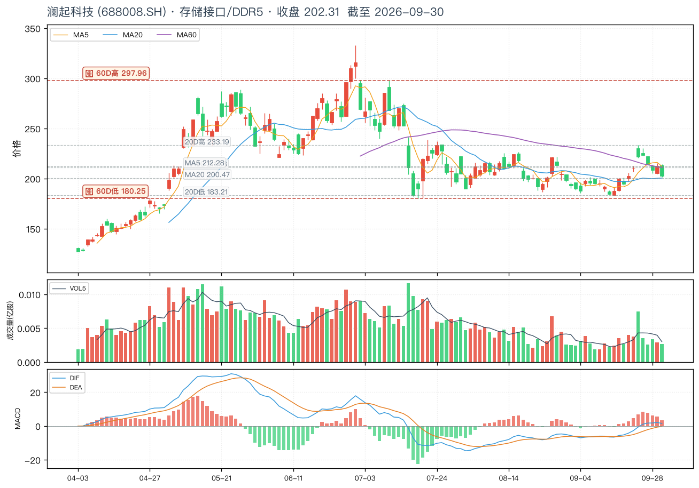
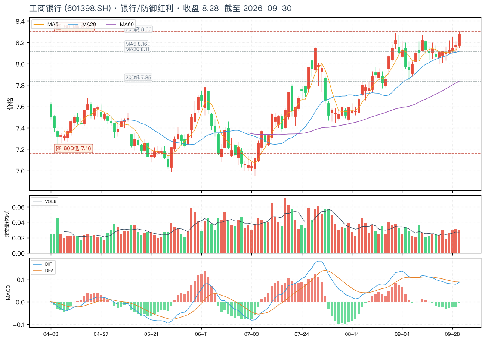
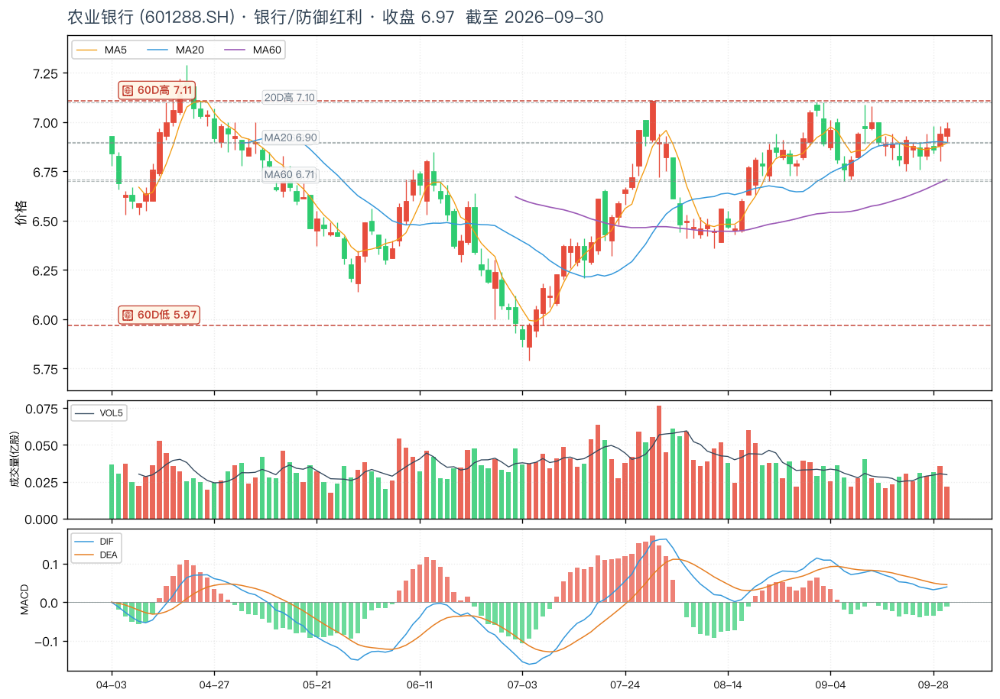
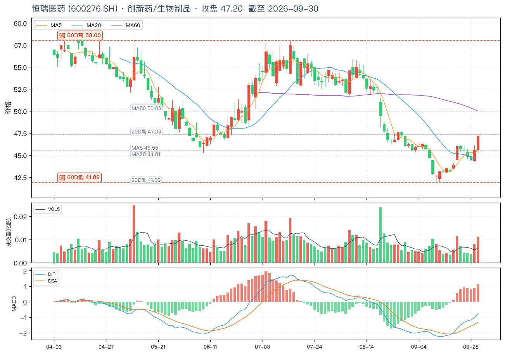
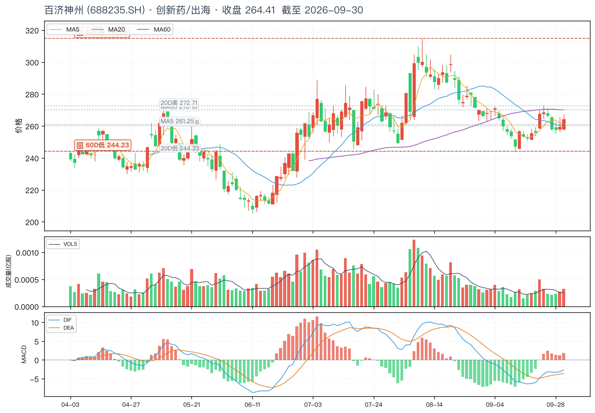

📈 wu2198 投资观点日报 · 2026-10-04
📅 2026-10-04 (周日 · 🇨🇳 国庆假期第 4 天 · 博主纯鸡汤休整 · 关键节前预期已锁定)
🏛️ 沪指 3842.19 (+0.31%)
📊 创业板 3135.28 (-0.23%)
🎯 沪深300 4357.62 (+0.29%)
📊 数据源:weibo-watcher + tushare
⚪博主最近一天核心立场:
周日纯休整 · 节前主线 (美股纳指 ATH + 港股 -668 + 美光财报) 已锁定。
最近一天 (10/03 + 10/04) 共 10 条 帖 (1 条带操盘信号: 10/03 美股纳指 ATH + 真科技 🟢),
大盘 3842.19 (+0.31%) 站上 3800 关卡,
创业板 3135.28 (-0.23%) 季线跌 27.8%,
沪深300 4357.62 (+0.29%) 微红。
10/03 07:58 美股纳指改写历史新高 + 真科技/硬科技涨幅领先 (6139赞 · 最近一天互动最高) — 节后 10/9 A 股硬科技主线。
沿用 10/02 港股 -668 点 防御预警 + 10/01 美光财报(营收+380% / 净利+1077.79%) 隐含存储芯片。
🟢 节后 10/9 双主线: 硬科技进攻 (半导体/HBM) + 银行/红利防御。
📊 核心数据卡片
博主核心立场
⚪ 周日休整
10/3 美股硬科技 + 港股 -668
沪指 9/30 收
3842.19 (+0.31%)
站上 3800 · 季线跌 6.16%
创业板 9/30 收
3135.28 (-0.23%)
季线跌 27.8% · 创 2015 以来最大
沪深300
4357.62 (+0.29%)
同步微红 · 老登股护盘
博主最近一天
⚪ 1 条带信号
10/3 美股纳指 ATH · 沿用主线
节后关注
🟢 10/9 A 股开盘
硬科技主线 + 防御配置
📋 完整微博列表(最近 10 条 · 按时间倒序 · 10/04 21:00 抓取)
| 时间 |
方向 |
信号 · 置信 |
类别 |
内容摘要 |
互动(转/评/赞) |
综合分 |
| Sun Oct 04 07:33 |
⚪ |
中性 · — |
问候/鸡汤 |
早安,老铁们……缩小昨日的烦恼,放大今日的美好,保持接纳一切的心态,就会巧遇无数个惊喜! |
R:47 C:692 L:5616 |
7047 |
| Sun Oct 04 06:49 |
⚪ |
无关 · — |
娱乐/社会 |
#法国博主吐槽中国演员被偷相机#与国内无法比拟! |
R:9 C:151 L:2762 |
3073 |
| Sat Oct 03 22:29 |
⚪ |
中性 · — |
问候/鸡汤 |
大家晚安! |
R:4 C:271 L:3190 |
3736 |
| Sat Oct 03 22:08 |
⚪ |
无关 · — |
体育/国足 |
#巴勒斯坦球员向国足道歉#没事,应该这样! |
R:11 C:129 L:2883 |
3152 |
| Sat Oct 03 17:01 |
⚪ |
无关 · — |
社会 |
#烟草局招聘下次直接报身份证#这这位体育生需要这个岗位! |
R:16 C:151 L:3560 |
3878 |
| Sat Oct 03 16:59 |
⚪ |
无关 · — |
生活 |
#为什么现在退房时酒店不查房了#一不值钱,二浪费时间,三成本高! |
R:15 C:127 L:3490 |
3759 |
| Sat Oct 03 07:58 |
🟢 |
多 · 高 |
美股/硬科技 |
周五晚美国市场纳指改写历史新高,真科技、硬科技涨幅领先。 |
R:28 C:479 L:6139 |
7125 |
| Sat Oct 03 06:34 |
⚪ |
无关 · — |
体育/国足 |
#国足0比5惨败却让小将接受采访#让我们村的队员上吧! |
R:18 C:327 L:3778 |
4450 |
| Fri Oct 02 23:13 |
⚪ |
中性 · — |
问候/鸡汤 |
大家晚安! |
R:3 C:186 L:3426 |
3801 |
| Fri Oct 02 20:36 |
⚪ |
无关 · — |
杂谈/社会 |
#北京独居女子离世房产判归国家#看来还是找个小奶狗陪一下好点! |
R:18 C:218 L:3743 |
4197 |
🚦 核心操盘信号 (LLM 二次摘要 · 最近一天 10/03 + 10/04)
🟢 信号 1 — 10/03 07:58 美股纳斯达克改写历史新高 · 真科技/硬科技涨幅领先 (博主最近一天唯一关键观点 · 节后新催化)
原帖「周五晚美国市场纳指改写历史新高,真科技、硬科技涨幅领先。」(28/479/6139 · 7125 综合分 · 10/03 + 10/04 互动最高)
解读博主 10/03 (国庆假期第 3 天) 给出 最近一天 (10/03+10/04) 唯一关键操盘信号 —— 美股纳指创历史新高,真科技/硬科技涨幅领先。周日(10/04) 博主纯鸡汤休整,沿用此主线。
- 美股纳指 ATH 隐含 A 股映射:美股硬科技涨幅领先,直接利好 A 股半导体/存储芯片/HBM/AI 算力板块。最近一天唯一操盘信号,标志节后 10/9 A 股开盘 硬科技主线
- A 股映射核心标的:
- 兆易创新 603986 — NOR Flash 全球第三 + DRAM 利基型龙头, 9/30 收 353.90 -3.72% (60D 高 707.97 / 60D 低 337.1) 节前已回调,节后美股硬科技利好催化
- 澜起科技 688008 — DDR5 内存接口芯片全球龙头 (市占率 40%+), 9/30 收 202.31 -4.84% (60D 高 297.96 / 60D 低 180.25) AI 服务器 HBM 关键供应商
- 博主动机:通常博主会在节后开盘前 1-3 天发「美股核心标的走势 → A 股映射」, 引导关注硬科技主线; 10/01 美光财报(2026Q4 营收+380%/净利+1077.79%) + 10/03 美股纳指 ATH 形成 双重利好叠加
- 操作策略:节后 10/9 A 股开盘,关注 真科技/硬科技 板块 (半导体/存储芯片/HBM/AI 算力), A 股映射兆易+澜起, 适度规避前期累计涨幅过大的品种 (兆易 -3.72% / 澜起 -4.84% 节前已回调, 节后催化窗口)
🔴 信号 2 — 沿用 10/02 港股恒生指数下跌 668 点 (博主 10/02 大盘判断 · 节后开盘预警)
原帖「港股恒生指数目前下跌 668 点!」(7/280/4402 · 4969 综合分 · 10/2 互动最高)
解读10/2 (国庆假期中) 港股节后开盘第一日暴跌,博主主动提醒节后 A 股开盘压力。最近一天(10/03+10/04) 博主周日纯鸡汤休整,沿用此判断。
- 港股暴跌 → 节后 A 股承压:港股作为 A 股先行指标,跌幅 668 点(约 -2%) 对应 A 股开盘同样承压,10/9 (周四节后首个交易日) 需要警惕低开
- 9/30 上证 3842.19 +0.31%:节前站上 3800 关卡,但节后面临港股拖累风险
- 9/30 创业板 3135.28 -0.23%:较 9/29 微跌,节后季线低位风险更大
- 9/30 沪深300 4357.62 +0.29%:同步微红,节后防御属性较强
- 操作策略:节后开盘防御为主;减仓成长股/创业板;增配银行/红利防御;关注美股硬科技 → A 股映射 (兆易+澜起) 短期催化
🟢 信号 3 — 沿用 9/29 + 9/30 + 10/01 主线 (博主最近一周核心主线)
原帖回顾:
- 10/01 16:48 美光科技 2026Q4 财报(营收 +380% / 净利 +1077.79%) — 隐含关注存储芯片/HBM,A 股映射:兆易 + 澜起
- 9/30 14:08「四大行, 白酒, 医药, 行业龙头等老登股局部上涨. 指数是小红!」(3936 赞)
- 9/30 14:13「生物制品板块最近两个月走出了几匹黑马!」(4023 赞)
- 9/30 15:33「大盘季线跌 6.16%, 创业板季线跌 27.8%, 深成指季线跌 20.47%……创业板指数创 2015 年以来最大季跌幅!」(4722 赞)
- 9/29 09:45「3800 关卡附近, 多方在组织小型抵抗!」(9220 赞 · 互动最高)
- 9/29 11:09「四大行最近一直在提肩带!」(7099 赞)
- 9/29 19:52 央行降息+扩信用三大政策:PSL -25bp / 科创再贷款 1.4 万亿 / 支农支小 4.85 万亿 (1429 赞)
解读博主 10/04 周日纯鸡汤休整 + 10/03 唯一操盘信号美股硬科技 + 沿用 9/29 + 9/30 + 10/01 主线 + 10/02 港股暴跌预警。博主最近一天 (10/03+10/04) 已锁定节后 10/9 硬科技 + 银行防御双主线。
💼 3 大板块 + 6 支个股 (基于博主 10/03 实际提及 + 沿用 10/01 美光财报 + 9/29-9/30 主线)
选股原则:博主 10/03 美股纳指 ATH + 真科技硬科技 → A 股半导体/存储芯片主线 + 10/02 港股暴跌防御 + 10/01 美光财报延伸 + 沿用 9/29-9/30 老登股+生物制品黑马。节后 10/9 开盘双主线(硬科技进攻 + 银行/红利防御)。
🟢 板块 1: 半导体/硬科技 (博主 10/03 07:58 美股纳指 ATH + 真科技/硬科技涨幅领先 (6139赞) + 10/01 美光财报超级景气 → A 股映射 兆易+澜起 · 节后 10/9 硬科技主线)
🔴 兆易创新 (603986.SH) · 9/30 收 353.90 (−3.72%)
博主 10/03 07:58 美股纳指改写历史新高 + 真科技/硬科技涨幅领先 (6139赞 · 最近一天互动最高 · 节后新催化) → A 股映射最直接品种 · NOR Flash 全球第三 + DRAM 利基型龙头 · 10/01 美光财报(2026Q4 营收+380%/净利+1077.79%) 双重利好 · 节后存储芯片/硬科技主线
关键位:60D高 707.97 / 60D低 337.10 / 120D高 846.66 / 120D低 243.90 / 现价 353.90
🔴 澜起科技 (688008.SH) · 9/30 收 202.31 (−4.84%)
博主 10/03 07:58 美股硬科技涨幅领先 → A 股 DDR5 接口芯片映射 · 全球 DDR5 内存接口芯片龙头 市占率 40%+ · AI 服务器 HBM 关键供应商 · 美光 HBM/DDR5 利好直接传导 · 节后 10/9 开盘硬科技主线
关键位:60D高 297.96 / 60D低 180.25 / 120D高 332.90 / 120D低 136.66 / 现价 202.31
🟢 板块 2: 银行/防御红利 (博主 9/29 11:09 四大行提肩带 + 9/30 14:08 老登股局部上涨 + 央行 9/29 PSL -25bp 利好息差 · 节后 10/2 港股暴跌防御主线 · 节前/节后持有)
🟢 工商银行 (601398.SH) · 9/30 收 8.28 (+1.47%)
博主长期底仓 · 国有大行高股息(股息率 ~5.5%) · A 股市值最大银行 某队重仓基地 · 央行 9/29 19:52 下调 PSL 0.25bp 利好银行息差 · 9/30 老登股局部上涨代表标的 (银行板块涨幅第一) · 节后港股 10/2 暴跌 -668 防御首选
关键位:60D高 8.30 / 60D低 7.16 / 120D高 8.30 / 120D低 6.95 / 现价 8.28
🟢 农业银行 (601288.SH) · 9/30 收 6.97 (+0.43%)
9/29 涨幅银行第一 验证博主 11:09「四大行一直在提肩带」 · 国有大行高股息防御 · 央行降息 + 扩大再贷款 2000 亿利好息差 · 9/30 收 6.97 +0.43% · 节后港股暴跌防御配置
关键位:60D高 7.11 / 60D低 5.97 / 120D高 7.29 / 120D低 5.79 / 现价 6.97
🟢 板块 3: 创新药 (博主 9/30 14:13 生物制品黑马 + 14:08 医药局部上涨 · 9/30 恒瑞 +3.46% 黑马验证 · 沿用主线)
🟢 恒瑞医药 (600276.SH) · 9/30 收 47.20 (+3.46%)
博主 9/30 14:13「生物制品黑马」+ 14:08「医药局部上涨」核心标的 · 创新药龙头 · 创新药出海 (BD) 持续催化 · 集采压力释放估值修复 · 9/30 收 47.20 +3.46% · 节后 10/9 开盘关注
关键位:60D高 58.00 / 60D低 41.89 / 120D高 58.87 / 120D低 41.89 / 现价 47.20
🟢 百济神州 (688235.SH) · 9/30 收 264.41 (+1.91%)
博主 9/30 14:08「医药局部上涨」验证标的 · 创新药出海龙头 · 百泽安/百悦泽海外放量 · 海外营收占比 58% · 9/30 收 264.41 +1.91% · 节后 10/9 开盘关注
关键位:60D高 314.85 / 60D低 244.23 / 120D高 314.85 / 120D低 205.51 / 现价 264.41
📉 K 线图(关键位居左虚线标注)
🟢 上证指数 (000001.SH) · 9/30 收 3842.19 (+0.31%)

关键位:9/29 多方抵抗 3800 / 9/29 收 3830.45 / 9/30 收 3842.19 / 区间上沿 3926 / C 杀下一目标 3610 / 年大目标 4256(📌 红色虚线为 wu2198 关键位, 灰色虚线为自动均线关键位, 全部居左标注)
🔴 创业板指 (399006.SZ) · 9/30 收 3135.28 (-0.23%)

关键位:A 杀位 3160 / C 杀下一目标 3050 / 目标位 3590(📌 红色虚线为 wu2198 关键位, 灰色虚线为自动均线关键位, 全部居左标注)
🔴 兆易创新 (603986.SH) · 存储芯片/NOR+DRAM · 9/30 收 353.90 (-3.72%)

博主 10/03 07:58 美股纳指改写历史新高 + 真科技/硬科技涨幅领先 (6139赞 · 最近一天互动最高 · 节后新催化) → A 股映射最直接品种 · NOR Flash 全球第三 + DRAM 利基型龙头 · 10/01 美光财报(2026Q4 营收+380%/净利+1077.79%) 双重利好 · 节后存储芯片/硬科技主线
关键位:60D高 707.97 / 60D低 337.10(📌 红色虚线为 wu2198 关键位, 灰色虚线为自动均线关键位, 全部居左标注)
🔴 澜起科技 (688008.SH) · 存储接口芯片/DDR5 · 9/30 收 202.31 (-4.84%)

博主 10/03 07:58 美股硬科技涨幅领先 → A 股 DDR5 接口芯片映射 · 全球 DDR5 内存接口芯片龙头 市占率 40%+ · AI 服务器 HBM 关键供应商 · 美光 HBM/DDR5 利好直接传导 · 节后 10/9 开盘硬科技主线
关键位:60D高 297.96 / 60D低 180.25(📌 红色虚线为 wu2198 关键位, 灰色虚线为自动均线关键位, 全部居左标注)
🟢 工商银行 (601398.SH) · 银行/防御红利 · 9/30 收 8.28 (+1.47%)

博主长期底仓 · 国有大行高股息(股息率 ~5.5%) · A 股市值最大银行 某队重仓基地 · 央行 9/29 19:52 下调 PSL 0.25bp 利好银行息差 · 9/30 老登股局部上涨代表标的 (银行板块涨幅第一) · 节后港股 10/2 暴跌 -668 防御首选
关键位:60D高 8.30 / 60D低 7.16(📌 红色虚线为 wu2198 关键位, 灰色虚线为自动均线关键位, 全部居左标注)
🟢 农业银行 (601288.SH) · 银行/防御红利 · 9/30 收 6.97 (+0.43%)

9/29 涨幅银行第一 验证博主 11:09「四大行一直在提肩带」 · 国有大行高股息防御 · 央行降息 + 扩大再贷款 2000 亿利好息差 · 9/30 收 6.97 +0.43% · 节后港股暴跌防御配置
关键位:60D高 7.11 / 60D低 5.97(📌 红色虚线为 wu2198 关键位, 灰色虚线为自动均线关键位, 全部居左标注)
🟢 恒瑞医药 (600276.SH) · 创新药/生物制品 · 9/30 收 47.20 (+3.46%)

博主 9/30 14:13「生物制品黑马」+ 14:08「医药局部上涨」核心标的 · 创新药龙头 · 创新药出海 (BD) 持续催化 · 集采压力释放估值修复 · 9/30 收 47.20 +3.46% · 节后 10/9 开盘关注
关键位:60D高 58.00 / 60D低 41.89(📌 红色虚线为 wu2198 关键位, 灰色虚线为自动均线关键位, 全部居左标注)
🟢 百济神州 (688235.SH) · 创新药/出海 · 9/30 收 264.41 (+1.91%)

博主 9/30 14:08「医药局部上涨」验证标的 · 创新药出海龙头 · 百泽安/百悦泽海外放量 · 海外营收占比 58% · 9/30 收 264.41 +1.91% · 节后 10/9 开盘关注
关键位:60D高 314.85 / 60D低 244.23(📌 红色虚线为 wu2198 关键位, 灰色虚线为自动均线关键位, 全部居左标注)
⚠️ 风险提示
- 🔴 10/02 港股恒指节后开盘暴跌 668 点 (博主 11:50 大盘判断 · 4917 综合分) — 节后 10/9 A 股开盘承压, 港股作为先行指标, -2% 跌幅对应 A 股低开, 警惕低开走弱
- 🔴 9/30 季线收官极差 — 大盘季线跌 6.16%, 创业板季线跌 27.8% (创 2015 以来最大季跌幅), 三季度博主空仓策略验证
- 🔴 博主 10/03-10/04 操盘信号弱化(1 条) — 假期中只发 1 条美股硬科技,周日凌晨纯鸡汤休整,沿用 9/29-9/30 + 10/01 美光财报主线, 博主已选持币过节
- 🔴 博主 6/8 撤离本金+去年盈利一半, 预测偏多但实际行动更看空 — 实际仓位决策比预测更看空
- ⚠️ 博主 9/28 19:26 自述:等 C5 完成才能干 — 节前老登股局部上涨仅是 防御性反弹, 不是反转; 节后 C 杀结构可能延续
- ⚠️ 博主长期风控底线:不举债 / 不杠杆 / 只用闲钱 / 无技术不参与短线
- 🟢 10/03 07:58 美股纳指改写历史新高 · 真科技/硬科技涨幅领先 (6139赞 · 最近一天互动最高) — 节后 10/9 A 股硬科技主线, A 股映射兆易+澜起
- 🟢 10/01 美光财报隐含存储芯片 — 2026Q4 经调整营收 +380% / GAAP 净利 +1077.79%, HBM/存储芯片超级景气, A 股映射兆易+澜起
- 🟢 央行 9/29 19:52 三大政策利好 — ① PSL -25bp (银行+基建) ② 科创再贷款 1.4 万亿 (科技+创业板) ③ 支农支小 4.85 万亿 (普惠), 节后 10/9 关注落地
- 🟢 4 大银行 60D 高未破位 — 工行 8.28 vs 60D高 8.30 (差 0.02) / 农行 6.97 vs 60D高 7.11 (差 0.14), 银行底仓 60D 高未破位 · 节后防御首选
🎯 操作建议汇总
📌 大盘
短期(10/4 起 1-2 周 / 国庆假期至 10/9 节后开盘):🟢 美股纳指 ATH 叠加 9/30 站上 3800 + 港股暴跌防御预警 · 节后硬科技进攻 + 银行防御双主线。9/30 微红站上 3800, 老登股四大行 + 白酒 + 医药 同步反弹; 10/3 美股纳指 ATH + 真科技硬科技涨幅领先 → A 股硬科技映射; 10/2 港股暴跌 668 点, 节后 A 股开盘防御+硬科技关注并行。
- 9/30 上证 3842.19 +0.31%:站上 3800 关卡, 较 9/29 3830.45 涨 12 点; 季线跌 6.16% 收官
- 9/30 创业板 3135.28 -0.23%:较 9/29 3142.56 微跌 7 点, 季线跌 27.8% (创 2015 以来最大)
- 10/3 美股纳指 ATH (博主 07:58 唯一关键观点):真科技/硬科技涨幅领先 → A 股半导体/存储芯片/HBM/AI 算力映射
- 10/2 港股 -668 点(博主大盘判断):港股节后开盘暴跌, 拖累节后 A 股开盘
- 乐观情景:节后 10/9 央行 9/29 利好落地 + 美股硬科技叠加美光财报催化半导体 + 老登股防御主线延续
- 悲观情景:节后港股拖累下破 3800, 触发博主「C 杀」加速, 下看 3747-3650; 创业板失守 3050
- 关键操作:博主已自述「等 C5 完成才能干」+ 10/2 港股暴跌预警, 散户策略:节后双主线 — 硬科技进攻(兆易+澜起)+ 银行防御(工行+农行)
📌 板块策略
- 🟢 节后进攻主线(10/3 博主新增):半导体 / 真科技 / 硬科技 — 博主 10/03 07:58 美股纳指改写历史新高 · 真科技/硬科技涨幅领先 (6139赞 · 最近一天互动最高), 叠加 10/01 美光财报(2026Q4 营收 +380% / 净利 +1077.79%), 节后 10/9 A 股映射兆易创新 (NOR Flash 全球第三) + 澜起科技 (DDR5 接口芯片全球龙头)
- 🟢 防御主线(节后 10/2 港股暴跌后首选):四大行 — 博主 9/30 14:08「四大行局部上涨」, 工行 +1.47% / 农行 +0.43% 兑现; 央行 9/29 PSL -25bp 利好银行息差; 节前/节后持有
- 🟢 沿用主线(9/30 验证):创新药/生物制品 — 博主 9/30 14:13「生物制品黑马」+ 14:08「医药局部上涨」, 恒瑞 +3.46% / 百济神州 +1.91% 验证; 节后持续关注
- 🟡 适度关注:券商 / 保险 — 央行 9/29 降息利好若落地, 券商可能有补涨
- 🔴 回避:创业板 / 成长股 — 9/30 收 3135.28 仍失守 3160 A 杀位; 博主 9/30 季线收官确认创业板季线跌 27.8% + 10/2 港股暴跌拖累
- 🔴 回避:深成指权重 — 9/30 季线跌 20.47% 同步极差
📌 6 支个股监控
| 标的 | 板块 | 支撑 | 9/30 收 | 压力 | 60D高 | 监控动作 |
|---|
| 兆易创新 603986 | 半导体/存储 | 340 / 337 | 353.90 (-3.72%) | 500 / 708 | 707.97 | 关注 · 博主 10/3 美股硬科技 + 10/1 美光财报 → A 股映射最直接品种 · NOR Flash 全球第三 · 节前 -3.72% 已回调 · 节后硬科技主线催化 |
| 澜起科技 688008 | DDR5 接口 | 180 / 200 | 202.31 (-4.84%) | 250 / 298 | 297.96 | 关注 · 博主 10/3 美股硬科技 → DDR5 接口芯片全球龙头 · 美光 HBM 利好直接传导 · 9/30 跌幅最大 -4.84% |
| 工商银行 601398 | 银行 | 7.50 / 7.16 | 8.28 (+1.47%) | 8.30 / 9.30 | 8.30 | 持有 · 9/30 银行板块涨幅第一 · 验证博主「四大行提肩带」 · 60D 高 8.30 未破位 · 节后港股暴跌防御首选 |
| 农业银行 601288 | 银行 | 6.20 / 5.97 | 6.97 (+0.43%) | 7.11 / 7.50 | 7.11 | 持有 · 验证博主「四大行提肩带」 · 9/30 涨幅银行第二 · 60D 高未破位 · 节后防御配置 |
| 恒瑞医药 600276 | 创新药 | 45 / 41.89 | 47.20 (+3.46%) | 50 / 58 | 58.00 | 关注 · 9/30 黑马验证 · 博主 14:13「生物制品黑马」核心标的 · 创新药出海催化 · 沿用主线 |
| 百济神州 688235 | 创新药出海 | 244 / 247 | 264.41 (+1.91%) | 285 / 315 | 314.85 | 关注 · 博主 9/30 14:08「医药局部上涨」验证标的 · 创新药出海龙头 · 海外营收占比 58% · 沿用主线 |